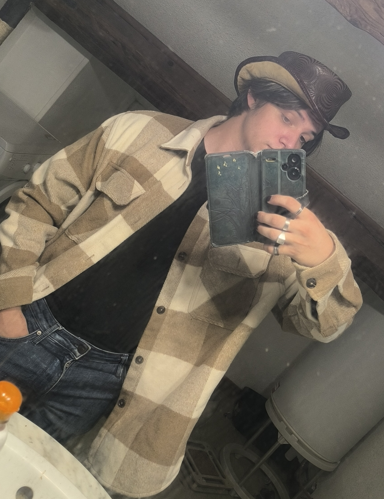
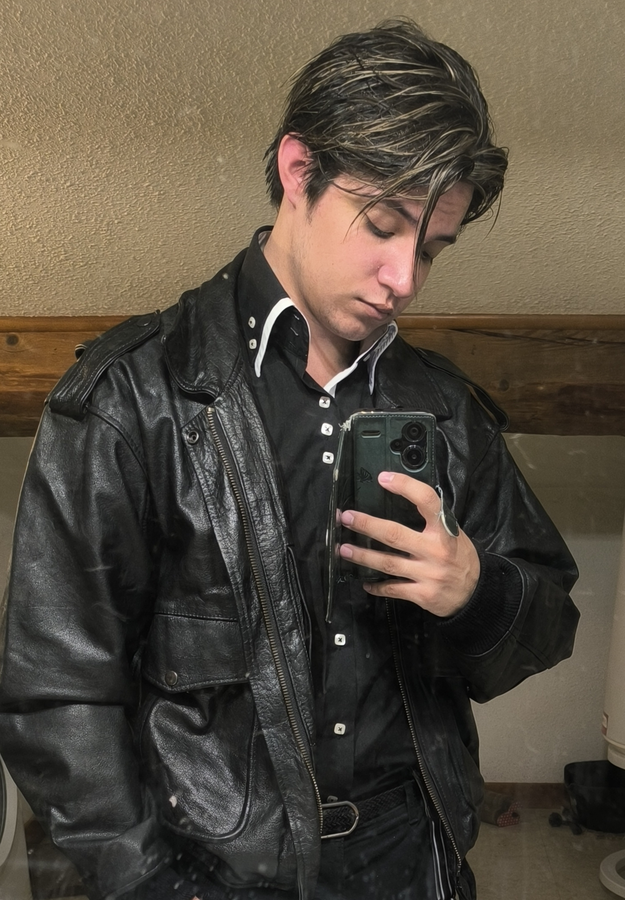
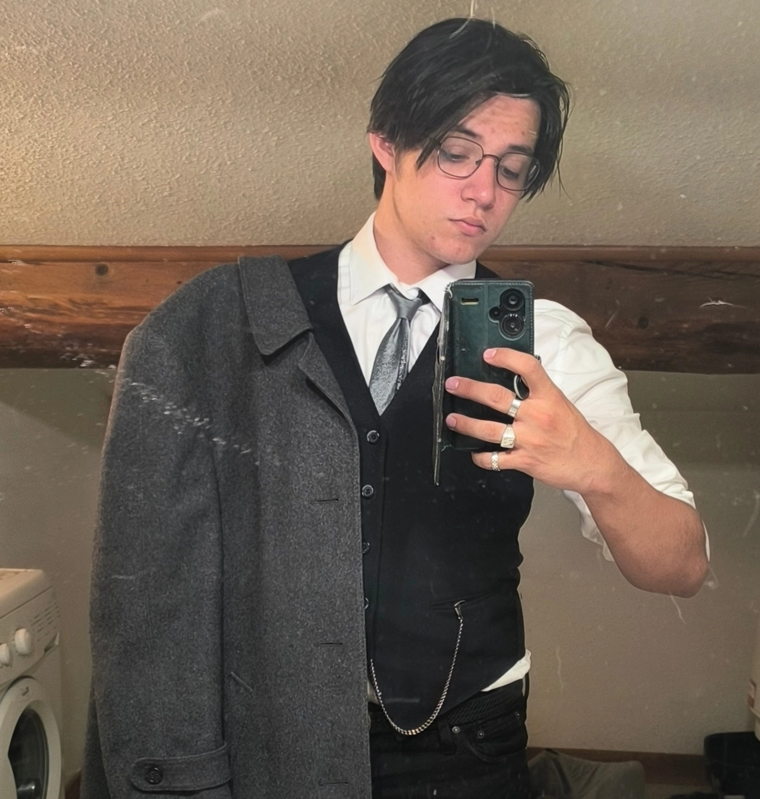

Bienvenue dans mon univers.
Choisis un chapitre dans la navigation pour en découvrir davantage.
Une personne, plusieurs facettes, un univers à découvrir. Bienvenue dans mon petit coin du monde.
Bienvenue dans mon univers.
Choisis un chapitre dans la navigation pour en découvrir davantage.
J'aime explorer les idées, observer, questionner et chercher du sens là où d'autres ne voient parfois que des détails. La curiosité et l'imagination occupent une place importante dans mon univers.
Je peux être sérieux et réfléchi, puis laisser place à un côté plus spontané et décalé. Je ne cherche pas à me résumer à une seule étiquette : je préfère laisser mes différentes facettes coexister.
Rester fidèle à ce que je pense juste.
Accorder de l'importance aux liens que je choisis.
Prendre le temps d'observer et de comprendre.
Continuer à apprendre, questionner et découvrir.
Je préfère que l'on apprenne à me connaître page après page.
J'aime les univers qui ont une identité, une histoire et une âme. Les jeux, les cartes à collectionner, les figurines et les mondes imaginaires font partie de mes passions.
J'aime aussi créer des personnages, imaginer des histoires et construire des mondes dans lesquels chaque détail peut avoir un sens.
Quelques fragments de mon univers, en images. Cette galerie sera complétée au fil du temps.




Tu peux également découvrir d'autres facettes de mon univers sur mes réseaux sociaux.
Un signe s'est allumé dans les marges. La Carte d'Identité Étoilé reconnaît les curieux, mais elle ne livre rien sans une petite réflexion.
Première énigme
« Je n'ai ni voix ni oreilles, pourtant je peux transmettre mille voix. Je garde les pensées et raconte les mondes. Qui suis-je ? »
✧ Archive déverrouillée ✧
Tu as trouvé le livre, mais le véritable secret n'est pas l'encre qu'il contient. C'est ce qu'on choisit d'y entendre.
« Le monde attend juste d'être écouté, alors écoute-le et raconte-le. »
Une première étoile s'allume. Cinq autres éclats attendent dans les pages du site. Retrouve-les et suis leur ordre.
✧ L'énigme de la constellation ✧
« La glace ouvre la voie. Le crépuscule vient ensuite. Le soleil brille au milieu. La braise le suit, et la lune clôt le voyage. »
Cherche les cinq petites étoiles dans les différentes fenêtres, puis clique dessus dans l'ordre donné par l'énigme.
La constellation attend son premier éclat.
✦ Deuxième archive : le gardien silencieux ✦
« Je nais quand une pensée quitte le silence. Je peux traverser les siècles sans faire un pas. Je change selon celui qui me lit, mais mes signes restent les mêmes. Je peux ouvrir mille portes sans posséder de clé. Qui suis-je ? »